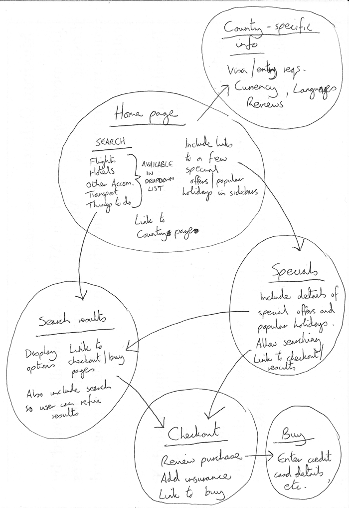

Plan
- Bear in mind that you'll have a few elements common to most (if not all)
pages — such as the navigation menu, and the footer content.
If your site is for a business, for example, it's a good idea to have your contact information available in the footer on each page.
Note down what you want to have common to every page.

- Next, draw a rough sketch of what you might want the structure
of each page to look like (it might look like our simple website above).
Note what each block is going to be.

- Now, brainstorm all the other (not common to every page) content
you want to have on your website — write a big list down.

- Next, try to sort all these content items into groups,
to give you an idea of what parts might live together on different pages.
This is very similar to a technique called Card sorting.

- Now try to sketch a rough sitemap — have a bubble for each page on your site,
and draw lines to show the typical workflow between pages.
The homepage will probably be in the center, and link to most if not all of the others; most of the pages in a small site should be available from the main navigation, although there are exceptions.
You might also want to include notes about how things might be presented.
